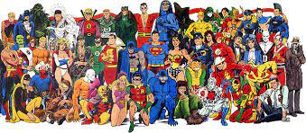

Movies & Anime
Movies I Love
-

one character which has given the life to the marvel series
-
One villian who is showed in the very logical propretive of what he does and why he does
-

its never ending league of heroes and never disappoints
Anime Favorites
-

One series which was there right from my childhood to till now and still going
-

A ninja world full of unexpected turns and gets us excited in every season
-
Goku is a character which tells us to grow at every defeat and learn from our mistakes and a mind blowing anime